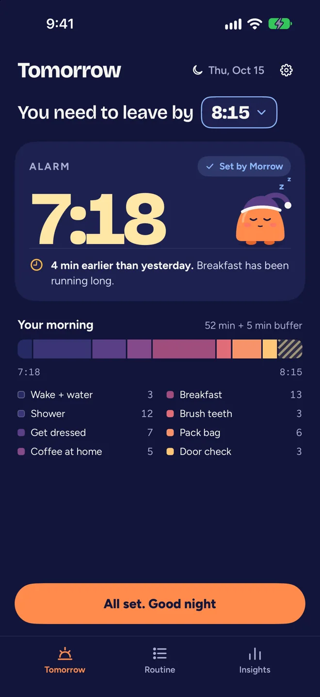
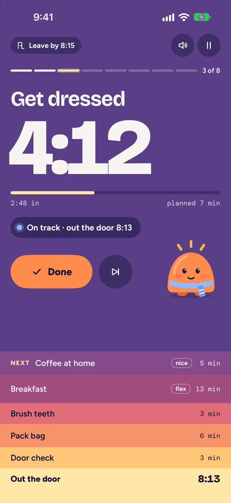
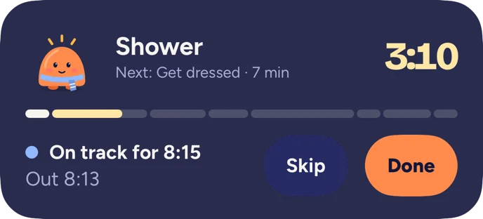
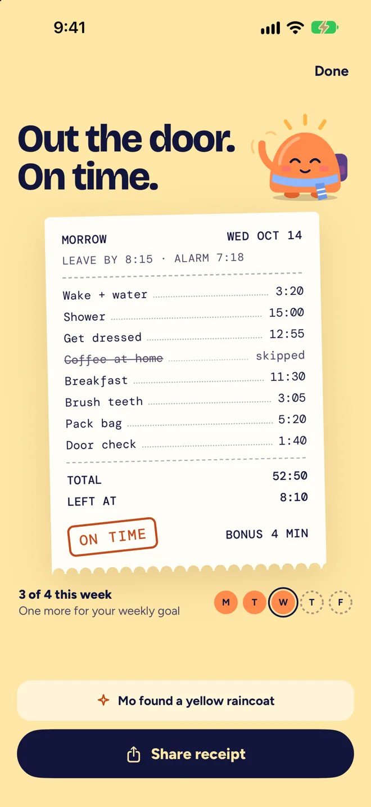
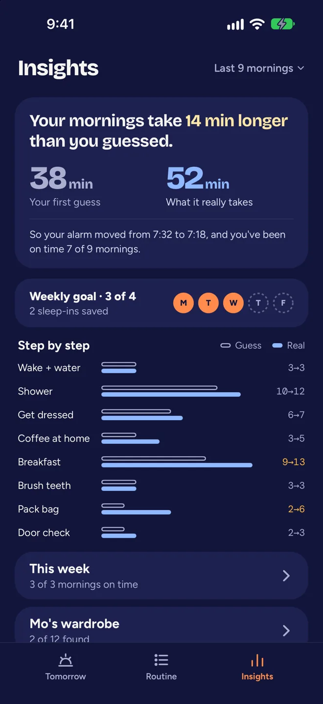

Wake up and leave on time.
Tell Morrow when you need to leave or start work. It sets your alarm from how long your mornings really take.
Morrow Plus subscription required. Yearly starts with a 14-day free trial. iPhone, iOS 26 or later.

How a morning goes
For anyone whose morning "takes 30 minutes" and actually takes 50. Morrow times the real thing and plans around it.
-
Leave at 8:15. Wake at 7:18.
Set your leave time tonight
Morrow takes your routine and a 5-minute buffer away from it and shows the wake-up time, with the reason in one line.
-
“Snooze 9 · no coffee”
The alarm rings
Morrow sets a system alarm on your iPhone. The snooze button says what a snooze costs.
-
One step at a time
Each step counts down on the Lock Screen and in the Dynamic Island, with a line that says if you're on track, behind or ahead. Turn on Voice cues in Morrow's Settings and it says each step out loud, so you don't have to watch the screen.


-
Out the door, or at your desk
The last step is a door check for keys, wallet, or whatever you tend to forget. If you work from home, the Work from home routine plans back from when work starts and ends with a desk check: laptop, charger, water, today's calendar. Then a receipt shows each step and when you finished.

It learns how long things really take
Morrow records how long each step takes and moves tomorrow's plan to match.
After 3 finished mornings, Morrow swaps your guess for the middle of each step's last 9 timed runs. Your alarm moves by at most 5 minutes a day, and Morrow tells you why.
If you fall behind, one tap skips a nice-to-have step or shortens the flexible ones. Or tap "I'll be late", and if your calendar has a morning event, Morrow drafts a message with your new arrival time for you to send.

Meet Mo
Mo is a small sun who gets ready with you. Mo brushes when you brush, puts on a scarf when you get dressed and waves when you leave. Miss a morning and Mo just slept in.
You pick a goal of 3 to 5 weekdays. One bad morning doesn't reset anything, and reaching the goal earns Mo something new to wear.


Morrow Plus
Morrow needs a Morrow Plus subscription. It's one subscription with everything in it.
Yearly
$39.99 a year
14-day free trial
Monthly
$9.99 a month
No trial. Switch to yearly any time.
Everything in Morrow
Your mornings
- Morrow sets the alarm for you every night, from your real times
- Lock Screen and Dynamic Island pacing, haptics, and spoken cues if you turn them on
- One-tap trimming when you fall behind, and "I'll be late"
- Mo, and extra wardrobe sets for Mo
Your plan
- Starter routines for weekdays, students, commuters, work from home, gym days and weekends, plus an evening wind-down
- Leave time from tomorrow's first calendar event, with travel time
- Insights, your full history and the weekly recap
Outside the app
- Home Screen and Lock Screen widgets, Siri and Shortcuts
- The Apple Watch app (watchOS 26 or later)
How the subscription works
- Set up your first routine and see your alarm, then choose a plan.
- Cancel or switch plans any time in your Apple Account settings.
- If your subscription ends, Morrow stops setting alarms and asks you to subscribe again. Your routines and history stay saved on your iPhone.
- On a new iPhone, Restore Purchases brings your subscription back.
Prices are in US dollars; the App Store shows the price for your country. Payment is charged to your Apple Account. Morrow Plus renews automatically unless you cancel at least 24 hours before the end of the current period. The free trial becomes a yearly subscription unless you cancel at least 24 hours before it ends.
Your mornings stay on your iPhone
- No account
- There is nothing to sign up for. Your routines and history are stored on your iPhone. Morrow has no server of its own.
- No ads or tracking
- Morrow shows no ads and does not track you across apps or websites.
- No analytics
- This version sends no usage data. Purchases go through Apple.
The privacy policy lists what Morrow keeps and the little that leaves your phone.